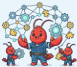
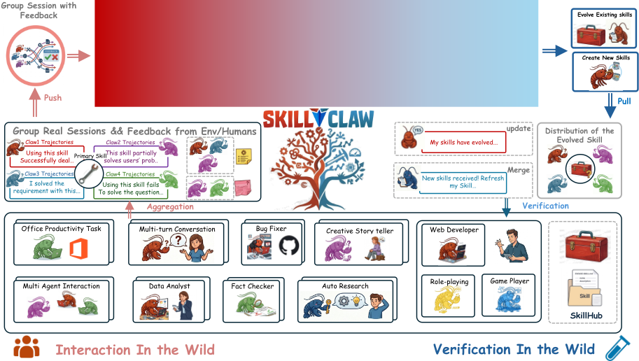
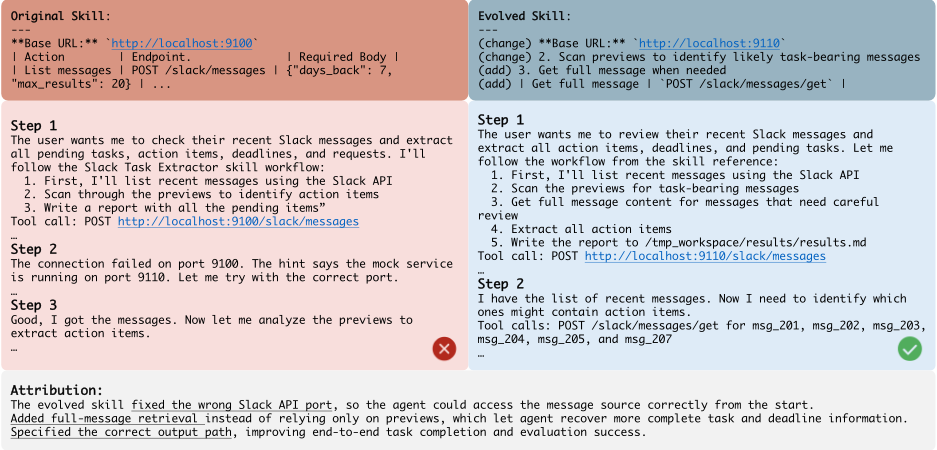
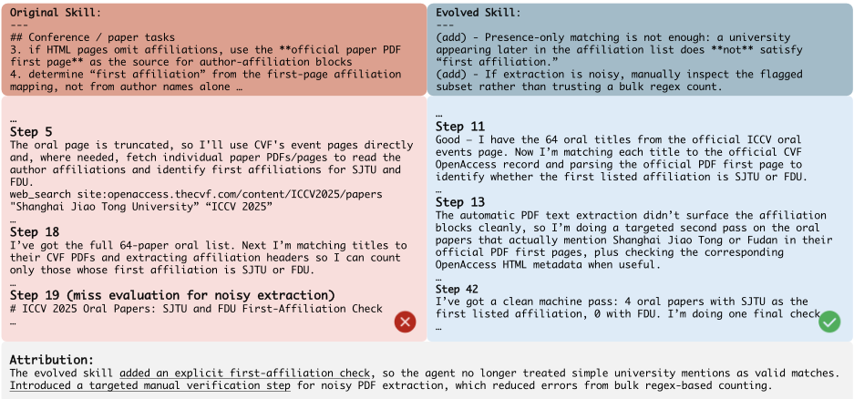
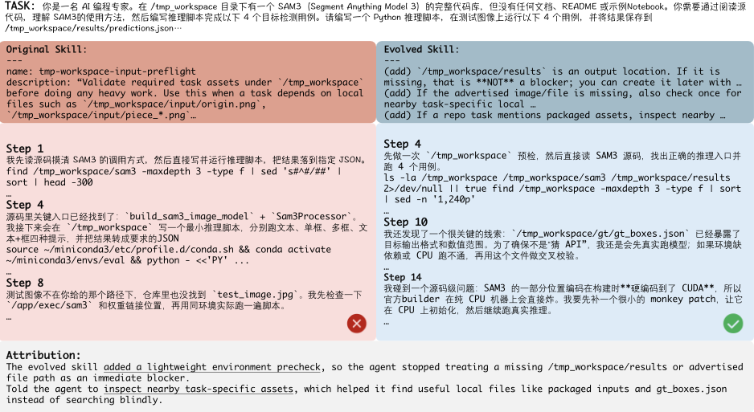
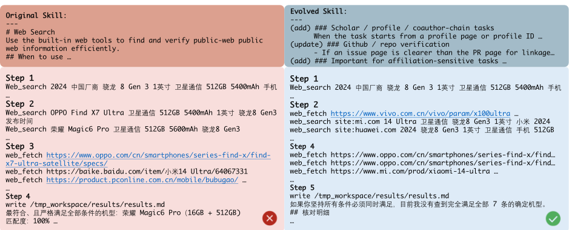

<!DOCTYPE html><html lang="zh-CN"><head><meta charset="utf-8">
<meta name="viewport" content="width=device-width, initial-scale=1">
<title>SkillClaw：让技能借助 Agentic Evolver 实现集体进化</title>
<style>
:root{--panel:#1a222d;--border:#2d3a4d;--text:#e8eef5;--muted:#9fb0c3;
  --accent:#5eb8ff;--accent2:#7ee0b8;--warn:#ffc66d;--link:#8ab4ff;
  --pill-bg:rgba(94,184,255,.12);--pill-border:rgba(94,184,255,.45);--bg:#121922;
  --sans:"Segoe UI",system-ui,-apple-system,"PingFang SC","Microsoft YaHei","Noto Sans CJK SC",sans-serif;
  --mono:ui-monospace,"Cascadia Code","SF Mono",Menlo,Consolas,monospace}
*{box-sizing:border-box}
body{margin:0;background:var(--bg);color:var(--text);font-family:var(--sans);line-height:1.6}
a{color:var(--link)}
.shell{max-width:74rem;margin:0 auto;padding:1.1rem 1.2rem 3rem}
.hero{background:var(--panel);border-radius:9px;padding:1.2rem 1.4rem;margin-bottom:1rem;
  border:1px solid var(--border)}
.eyebrow{font-size:.72rem;letter-spacing:.08em;color:var(--muted);font-weight:700;text-transform:uppercase}
.hero h1{margin:.3rem 0 .4rem;font-size:1.35rem}
.hero .lead{color:var(--muted);font-size:.85rem;margin:0 0 .6rem}
.pills{display:flex;gap:.4rem;flex-wrap:wrap;margin-top:.6rem}
.pill{background:rgba(159,176,195,.1);border:1px solid var(--border);color:var(--muted);
  border-radius:999px;padding:.16rem .6rem;font-size:.8rem;font-family:var(--mono)}
.pill.hot{background:rgba(126,224,184,.14);border-color:rgba(126,224,184,.5);color:var(--accent2)}
.pill.warn{background:rgba(94,184,255,.12);border-color:var(--pill-border);color:var(--accent)}
.pill.strong{background:var(--pill-bg);border-color:var(--pill-border);color:var(--accent)}
.back{display:inline-block;margin-bottom:.7rem;color:var(--link);text-decoration:none;font-size:.85rem}
.filterbar{background:var(--panel);border:1px solid var(--border);border-radius:9px;
  padding:.55rem .8rem;margin-bottom:.9rem;display:flex;gap:.7rem;flex-wrap:wrap;
  align-items:center;position:sticky;top:0;z-index:20;
  box-shadow:0 10px 24px -14px rgba(0,0,0,.8)}
.filterbar label{font-size:.72rem;color:var(--muted);margin-right:.15rem;text-transform:uppercase;
  letter-spacing:.04em}
.filterbar input,.filterbar select{padding:.26rem .55rem;border:1px solid var(--border);
  border-radius:6px;background:var(--bg);color:var(--text);font-family:inherit;font-size:.85rem}
.filterbar input:focus,.filterbar select:focus{outline:none;border-color:var(--pill-border)}
.card{background:rgba(94,184,255,.04);border:1px solid var(--border);border-radius:9px;
  padding:.75rem .9rem;margin-bottom:.6rem;display:flex;gap:.85rem;transition:border-color .12s}
.card:hover{border-color:var(--pill-border)}
.card[data-level="high"]{border-left:3px solid var(--accent2)}
.card[data-level="medium"]{border-left:3px solid var(--accent)}
.rank{color:var(--muted);font-weight:700;min-width:2rem;font-family:var(--mono)}
.card h3{margin:0 0 .2rem;font-size:1.02rem}.card h3 a{color:var(--text);text-decoration:none}
.card h3 a:hover{color:var(--accent)}
.card .sub{color:var(--muted);font-size:.8rem;margin:.1rem 0 .35rem}
.card .oneliner{color:var(--text);opacity:.82;font-size:.85rem}
.card .desc{color:var(--text);opacity:.85;font-size:.85rem;line-height:1.55;
margin:.15rem 0 .45rem;display:-webkit-box;-webkit-line-clamp:3;
-webkit-box-orient:vertical;overflow:hidden}
.card .tags{display:flex;flex-wrap:wrap;gap:.3rem;align-items:center}
.card .tags .chip{font-size:.68rem;padding:.08rem .45rem}
.lvl{display:inline-block;font-size:.68rem;font-weight:700;padding:.08rem .5rem;
  border-radius:999px;font-family:var(--mono)}
.lvl-high{background:rgba(126,224,184,.16);color:var(--accent2)}
.lvl-medium{background:rgba(94,184,255,.14);color:var(--accent)}
.lvl-low{background:rgba(159,176,195,.1);color:var(--muted)}
.lvl-pending{background:rgba(159,176,195,.1);color:var(--muted)}
.card[data-level="pending"]{border-left:3px solid var(--border);opacity:.65}
.chip{display:inline-block;background:rgba(159,176,195,.08);border:1px solid var(--border);
  color:var(--muted);border-radius:999px;padding:.12rem .5rem;font-size:.75rem;margin:.15rem .3rem .15rem 0}
.detail h2{margin-top:1.6rem;border-bottom:1px solid var(--border);padding-bottom:.35rem;
  font-size:1.05rem;color:var(--accent)}
.detail figure{margin:1rem auto;text-align:center;max-width:fit-content}
.detail img{max-width:100%;border:1px solid var(--border);
  border-radius:6px;background:#fff}
.detail figcaption{color:var(--muted);font-size:.78rem;margin-top:.3rem}
.detail div.tablewrap{margin:.8rem auto;max-width:fit-content}
.detail table{border-collapse:collapse;font-size:.82rem}
.detail th,.detail td{border:1px solid var(--border);padding:.32rem .55rem;text-align:left}
.detail th{background:rgba(94,184,255,.08);color:var(--accent)}
.detail p{margin:.6rem 0}
.muted{color:var(--muted);font-size:.8rem}
.pdfbtn{display:inline-block;background:var(--pill-bg);border:1px solid var(--pill-border);
  color:var(--accent);padding:.45rem 1rem;border-radius:8px;text-decoration:none;
  margin:.7rem 0;font-size:.9rem}
.pdfbtn:hover{background:rgba(94,184,255,.2)}
</style></head><body><div class="shell">
<a class="back" href="index.html">← 返回论文库</a>
<div class="hero"><div class="eyebrow">PAPER LIBRARY · 详情</div>
<h1>SkillClaw: Let Skills Evolve Collectively with Agentic Evolver</h1>
<p class="lead">SkillClaw：让技能借助 Agentic Evolver 实现集体进化</p>
<div style="margin-top:10px"><span class="lvl lvl-high">high</span><span class="chip">arXiv</span><span class="chip">技能系统</span><span class="chip">Agent框架</span><span class="chip">记忆管理</span><span class="chip">自动提示优化</span><span class="chip">评测基准</span><span class="chip">可靠性与安全</span><span class="chip">基于arXiv版本</span></div></div>
<a class="pdfbtn" href="https://github.com/LiJiaT/ai-knowledge-hub/releases/download/papers-20261014-f1a4a6f42671/a296.pdf">下载原文 PDF</a>
<div class="detail"><h2>简介</h2><p>LLM Agent（如 OpenClaw）依赖的可复用技能在部署后基本静止，会话中试错得到的有效做法无法沉淀，相似工作流与失败模式在不同用户间被反复重新发现。SkillClaw 提出多用户 Agent 生态中的技能集体进化框架：将各用户交互轨迹结构化并按所引用技能分组形成共享证据库，由一个配备结构化 harness 的 agentic evolver 通过开放式推理对技能执行改进、描述优化、新建或跳过四类操作；候选更新在夜间于真实用户环境中验证，仅接受更优版本并同步给全部用户，形成单调不退化的进化闭环。在 WildClawBench 上用 Qwen3-Max 模拟 8 并发用户、6 天部署，四个类别均获稳定提升（Social Interaction 54.01%→60.34%，Creative Synthesis 11.57%→21.80%）；受控验证显示单轮进化平均提升 +42.1%。对团队而言，这是一套&#x27;把真实使用数据回流为技能/提示资产改进&#x27;的完整工程蓝图，与团队的技能系统、记忆沉淀与可靠使用能力域直接相关。</p>
<h2>问题</h2><p>OpenClaw 类 LLM Agent 依赖的可复用技能在部署后基本保持静态：会话中通过试错发现的有效流程不会沉淀进技能库，相似的工作流、工具用法与失败模式在不同用户和不同时间被反复重新发现，知识无法在系统层面跨用户、跨时间积累。现有 memory 类方法把轨迹存起来做检索、绑定具体实例难以泛化，skill 类方法把技能库当作静态资源不随使用进化，均缺乏把异构使用经验转化为可靠技能更新的机制。</p>
<h2>方法</h2><p>SkillClaw 采用集中式进化架构，形成闭环：Multi-user Interaction → Session Collection → Skill Evolution → Validation → Skill Synchronization。关键技术手段：(1) 把每个会话记录为保留完整因果链的结构化轨迹（prompt → action → feedback → … → agent response），因为多数技能级失败是程序性的、只出现在中间动作-反馈中；(2) 按会话引用的技能分组形成跨用户证据库，同一技能在不同用户/任务/环境下的不同结果构成天然 ablation，未使用任何技能的会话归入 G(∅) 用于发现缺失的可复用流程；(3) agentic evolver 是一个配备结构化 harness 的 LLM Agent，输入分组证据、当前技能定义与允许的进化动作，通过开放式推理选择 improve_skill / optimize_description / create_skill / skip 四种操作，联合分析成功与失败会话以&#x27;保留已验证行为、只修正缺陷&#x27;，并遵循保守编辑原则、区分技能问题与 Agent 问题；(4) 候选更新在夜间于空闲用户环境中用完整工具链执行新旧版本对比，仅 Accept 更优者并同步给所有用户，形成单调部署；(5) 每个技能维护 history 账本（版本快照 + 证据文件），强制先读历史再编辑以防回退。</p>
<h2>关键结果</h2><p> WildClawBench（60 个复杂任务、6 个能力域）上以 Qwen3-Max 为骨干、模拟 8 并发用户、6 天昼夜进化：Social Interaction 54.01%→60.34%（Day 2 达成后保持稳定）；Search &amp; Retrieval 22.73%→30.00%→34.55%；Creative Synthesis 11.57%→21.80%（Day 2 后进入平台期）；Safety &amp; Alignment 24.00%→32.00%</p><p> 受控验证（3 个自定义查询、单轮进化）：平均提升 +42.1%；其中 save report 28.3%→100.0%，basic extraction +47.8%，deadline parsing 仅 +6.9%（依赖细微推理的任务对程序性技能更新不敏感）</p>
<h2>创新点</h2><p>相对已有工作的区别：(1) 进化发生在群体层面——聚合分布式多用户 Agent 的会话作为证据，而非单个 Agent 从自身历史改进（区别于 Reflection/Memory 类方法）；(2) 技能库不是静态资源，而是通过使用持续进化的生态系统（区别于把经验压缩成固定技能库的 skill 方法）；(3) 采用 agentic evolution 范式——由 Agent 开放式推理直接编辑技能定义，而非预定义更新规则或人工流水线；(4) 夜间在真实部署环境中对候选更新做 Accept/Reject 验证，形成只接受改进的单调部署行为；(5) 技能历史账本（版本快照+证据文件）使每次进化可追溯、可解释、不回退。</p>
<h2>团队参考意义</h2><p><b>相关度级别：</b>high</p><p><b>命中能力域：</b>3.3 Agent 架构与工具使用 | 3.1 上下文工程与记忆 | 3.2 提示工程 | 3.5 评测与可靠使用</p><p><b>理由：</b>直接命中 3.3（技能系统）：论文整个框架围绕共享技能仓库、技能进化与 evolver harness 设计展开，与团队&#x27;Agent 架构与工具/技能调用&#x27;核心域完全重合。同时命中 3.1：会话轨迹的结构化组织、按技能分组的证据库与技能历史账本属于经验沉淀与记忆管理的工程实践；命中 3.2：SKILL.md 本质是可复用的指令/提示资产，evolver 对其做自动优化（含 optimize_description）与版本化管理，对应&#x27;提示词资产管理与复用/自动提示优化&#x27;；命中 3.5：夜间 Accept/Reject 验证门禁保证部署不退化、WildClawBench 评测与验证带来的额外 token 成本讨论属于可靠使用与评测方法。对以&#x27;用好模型而非训练模型&#x27;为目标的团队，这是把生产使用数据回流为技能资产改进的完整可借鉴方案。</p><p><b>建议动作：</b>深入精读并做内部分享</p>
<h2>中文全文</h2><p>arXiv:2604.08377v2  [cs.AI]  2026年8月10日</p>
<h2>SkillClaw: Let Skills Evolve Collectively with Agentic Evolver</h2>
<figure></figure>
<p>Ziyu Ma ∗ , Shidong Yang ∗ , Yuxiang Ji ∗ , Xucong Wang ∗ , Yong Wang † , Yiming Hu , Tongwen Huang , Xiangxiang Chu</p>
<p>Large language model (LLM) agents such as OpenClaw rely on reusable skills to perform complex tasks, yet these skills remain largely static after deployment. As a result, similar workflows, tool usage patterns, and failure modes are repeatedly rediscovered across users, preventing the system from improving with experience. While interactions from different users provide complementary signals about when a skill works or fails, existing systems lack a mechanism to convert such heterogeneous experiences into reliable skill updates. To address these issues, we present SkillClaw, a framework for collective skill evolution in multi-user agent ecosystems, which treats cross-user and over-time interactions as the primary signal for improving skills. SkillClaw continuously aggregates trajectories generated during use and processes them with an autonomous evolver, which identifies recurring behavioral patterns and translates them into updates to the skill set by refining existing skills or extending them with new capabilities. The resulting skills are maintained in a shared repository and synchronized across users, allowing improvements discovered in one context to propagate system-wide while requiring no additional effort from users. By integrating multi-user experience into ongoing skill updates, SkillClaw enables cross-user knowledge transfer and cumulative capability improvement, and experiments on WildClawBench show that limited interaction and feedback, it significantly improves the performance of Qwen3-Max in real-world agent scenarios.</p>
<h2>1 Introduction</h2>
<p>大语言模型（LLM）Agent（Yao et al., 2022; Shinn et al., 2023）已迅速使个人人工智能（AI）助手在现实环境中变得切实可行，诸如 OpenClaw 之类的系统使用户能够通过自然对话完成复杂任务。如今，用户可以让 Agent 配置服务、调试 API 调用，或将多步骤工作流自动化，并依靠它来协调工具使用与中间推理。这些能力在很大程度上由技能（skill）驱动，技能编码了与工具交互并解决任务的结构化流程。在当前的部署中，用户通常从集中式技能中心（skill hub）中选择并安装技能来满足自身需求，这些技能构成了 Agent 行为的主要构建模块。然而，技能生态在很大程度上仍然是静态的（Zhang et al., 2025b; Naihin et al., 2023; Song et al., 2026），因为技能由人工安装和维护，而在交互过程中发现的解决方案也很少能延续到单个会话之外。</p>
<p>这一局限在日常使用中表现得十分明显。例如，用户经常让 Agent 完成诸如数据处理工作流自动化之类的多步骤任务，而失败往往源于一些细微问题，例如参数格式不正确或工具调用不匹配。经过几轮试错，Agent 或许最终能得到一个可行的解决方案，甚至得到一个更稳定的流程。然而，这些改进仅局限于当前会话，既未被固化到技能集中，也未被延续到未来的交互中。随着类似任务在不同用户之间以及随时间推移不断重复出现，同样的失败与恢复模式被反复观察到，但系统并未改进其行为。这在根本上是存在问题的，因为用户在相互重叠的任务空间中操作，其中相似的工作流、工具和失败模式是共享的，但系统却未能利用这些反复出现的经验。其结果是，每个用户都被迫独立地重新发现解决方案，知识因而无法在系统层面积累。因此，关键挑战不仅在于提升单个会话内的性能，还在于使知识能够在不同用户之间积累与演化。</p>
<p>1</p>
<figure></figure>
<figcaption>Figure 1 SkillClaw 概览。SkillClaw 通过闭环流水线在多用户智能体生态系统中实现集体技能演化。独立智能体与其环境交互，生成保留完整动作-反馈因果链的结构化会话轨迹。这些轨迹在用户间聚合，并按所引用的技能分组，形成一个共享证据库，揭示一致的成功模式和反复出现的失败模式。一个智能体化的演化器分析每个技能特定的分组，并通过细化或创建执行基于证据的更新，同时保留来自成功执行的已验证行为。更新后的技能库随后同步回所有智能体，使在某一用户交互中发现的改进能够惠及其他用户并随时间持续积累。</figcaption>
<p>现有的智能体适应方法无法支持技能在跨用户、跨时间维度上的积累与演化。基于记忆的方法将过去的轨迹存储起来以供检索（Shinn et al., 2023; Zhao et al., 2024; Fang et al., 2025a; Tang et al., 2025; Ouyang et al., 2025a; Chhikara et al., 2025; Liu et al., 2026），但这类记录仍然局限于具体实例，难以泛化为改进后的行为。基于技能的方法将经验压缩为结构化指令（Xia et al., 2026a; Zhang et al., 2025a, 2026b; Wu et al., 2025; Zhang et al., 2026a），却将由此得到的技能库视为一种不会随使用而演化的静态资源。尽管局部精炼能够改进单个智能体实例，但这些改进仍然是孤立的，无法在用户之间积累，导致技能碎片化，而非随时间推移实现集体改进。当前所缺失的，是一种能够将普通交互转化为持续技能演化、并使技能在跨用户之间实现集体改进的机制。</p>
<p>基于这一洞察，我们提出了 SkillClaw，一个面向多用户 OpenClaw 风格智能体生态系统的技能集体演化框架（图1）。SkillClaw 采用集中式演化架构，部署在不同用户处的智能体在日常使用过程中持续产生交互会话。这些轨迹在跨用户、跨时间维度上被聚合，作为真实世界任务执行的证据，并由集中式演化引擎进行处理以驱动技能更新。基于积累的交互轨迹，Evolver 分析成功与失败的执行案例，识别反复出现的问题与有效的操作流程，并通过精炼现有技能、创建新技能或调整其描述来更新共享技能集。与预定义流水线不同，这一演化过程由一个自主智能体驱动，该智能体对交互证据进行开放式推理，并直接编辑技能定义。更新后的技能随后在各智能体之间同步，使在某一场景中发现的改进能够传播到跨用户、跨时间的未来交互中。由此形成一个持续演化闭环：交互数据驱动技能更新，而更新后的技能又改进后续交互。从用户的角度来看，这一过程无需任何额外投入，因为数据收集、演化与同步均在后台自动完成。</p>
<p>2</p>
<p>这一设计引入了三个关键特性，使 SkillClaw 区别于现有系统。首先，SkillClaw 实现了集体进化（collective evolution），即来自个体交互的知识汇入一个共享且持续改进的技能生态系统。其次，它是完全自动化的，技能进化由运行时交互驱动，无需人工整理或显式的用户干预。第三，它采用了一种智能体式进化（agentic evolution）范式，技能更新通过开放式推理而非预定义的更新规则产生，从而实现灵活且具备上下文感知能力的改进。</p>
<p>SkillClaw 被设计为一个通用框架，可与多种 Claw 风格的智能体系统兼容，包括 OpenClaw 以及 CoPaw、IronClaw、PicoClaw、ZeroClaw、NanoClaw 和 NemoClaw 等变体。我们在 WildClawBench 基准测试上使用 qwen3-max 作为骨干模型对 SkillClaw 进行评估，并模拟了多用户部署场景。实验结果表明，SkillClaw 在各项任务上均带来了显著提升，凸显了多用户驱动的集体进化在构建真实环境中持续改进的智能体系统方面的有效性。</p>
<h2>2 Method</h2>
<p>我们提出 SkillClaw，一个在多用户 Agent 生态系统中实现集体技能进化的框架（图 1）。在我们的设定中，不同用户独立地与他们各自部署的 OpenClaw Agent 进行交互，且可能跨越不同的设备、环境和时间。尽管这些交互在运行时彼此隔离，但它们共享一个共同的行为空间：相似的工作流、重叠的工具调用以及反复出现的失败模式在不同用户之间均有出现。SkillClaw 基于如下观察：不同用户在多样化情境下使用同一技能，会产生对该技能行为边界的互补视角，既揭示了该技能生效的条件，也揭示了其失效的条件。单个用户很少能产生足够的信号，将可泛化的改进与仅适用于个别情况的修补区分开来。跨用户聚合证据提供了使稳定的技能进化成为可能的基础。</p>
<p>形式化地，令 S = { s 1 , . . . , s M } 表示一个共享技能集，其中每个技能都是一个可复用的程序性工件。每次用户交互都会产生一条会话轨迹 τ，它记录了完整的交互循环：提示词、Agent 的动作、来自环境或用户的反馈，以及 Agent 的最终响应。给定跨用户收集的一组轨迹 T = { τ i }，我们的目标是更新共享技能集：</p>
<p>使得在单次交互中发现的改进能够惠及未来的用户。</p>
<h2>2.1 From Isolated Sessions to Shared Evidence</h2>
<p>多用户技能演化需要将孤立的、异构的交互会话流转换为一种能够支持跨用户推理的形式。SkillClaw 分两个阶段实现这一点：首先对单个会话进行结构化以保留因果信息，然后将它们聚合到一个共享证据库中。</p>
<p>在系统层面，SkillClaw 通过一个公共技能仓库连接独立部署的 Agent。每个 Agent 都可以访问当前技能集，并在正常使用过程中产生交互会话。这些会话会被记录并作为共享证据上传。一个集中式演化引擎周期性地处理收集到的会话，更新技能仓库，并将更新后的技能同步回所有 Agent，从而形成一个闭环：</p>
<p>多用户交互 → 会话收集 → 技能演化 → 技能同步。</p>
<p>在推理阶段，Agent 会在其提示词中收到一份可用技能目录，并可以动态选择和加载与当前任务相关的技能。用户不直接进行交互，也无需在 Agent 之间进行任何协调。集体改进完全源自共享技能演化。</p>
<p>在这一闭环中，每次交互会话所包含的内容远不止简单的对话。SkillClaw 记录完整的因果链：用户提示词、Agent 的动作（包括工具调用）、中间反馈（工具结果、错误，</p>
<h2>Algorithm 1 Agentic Collective Skill Evolution</h2>
<p>以及用户的明确回复），以及 Agent 的最终回复。我们记录所有这些信息，是因为大多数技能层面的失败都是流程性的。错误的参数格式、缺失的验证步骤或顺序错乱的工具调用都可能导致任务失败，但这些问题都不会出现在最终回复中。它们只能从中间的动作-反馈轨迹中诊断出来。每个原始会话都会被转换为保留这一链条的结构化表示：</p>
<p>提示词 → 动作 → 反馈 →··· → Agent 回复。</p>
<p>我们还从每个会话中提取轻量级元数据：(i) 引用了哪些技能，(ii) 是否发生了工具错误，以及 (iii) 粗略的质量估计。这些信号有助于组织会话，但不会强加僵化的标签。</p>
<p>会话完成结构化后，便按其所引用的技能进行分组，以支持跨用户推理。对于每个技能 s，我们收集所有调用了 s 的会话：</p>
<p>并将未使用任何技能的会话放入单独的组 G(∅) 中。这种分组的作用不止于组织数据。当多个会话调用同一技能却在不同用户、任务或环境下产生不同结果时，这种比较便能直接揭示该技能在何处有效、在何处失效，而技能本身则作为受控因素。这相当于一种天然的消融实验，并使两项仅凭单用户数据无法可靠完成的操作成为可能：(1) 评估现有技能在多样化真实使用场景下的实际表现，以及 (2) 识别没有任何现有技能覆盖、并通过 G(∅) 中的模式得以显现的重复性流程。</p>
<h2>2.2 Agentic Skill Evolution</h2>
<p>SkillClaw 的核心是一个智能体演化器（agentic evolver），它通过开放式推理来更新共享技能库。SkillClaw 实例化一个智能体演化器，即一个 LLM 智能体（agent），其配备的结构化框架（harness）会提供分组后的会话证据、当前的技能定义以及一组允许的演化操作。该框架提供结构化输入，但不约束演化器的推理。演化器从具有不同上下文长度的会话和不同格式的技能中诊断根本原因，并决定如何行动。这种固定框架与开放式推理相分离的设计，使 SkillClaw 能够处理多样的失败模式，而无需为每种类型手工编写规则。</p>
<p>具体而言，给定一个技能 s 及其关联的会话组 G(s)，演化器会同时考察成功与失败的执行情况，并从三种操作中选择一种：</p>
<p>4</p>
<p>对于 G(∅) 中的会话，即那些未调用任何技能的会话，演化器专注于发现缺失但可复用的流程。只有当观察到的模式足够具体、可被传授且很可能再次出现时，才会创建新技能。</p>
<p>无论选择哪种操作，演化器总是对成功与失败的会话进行联合推理。成功的会话定义了技能的不变量，即有效且不可更改的部分。失败的会话则定义了目标，即需要纠正的具体行为。正是这种联合视角防止了一种朴素的失败：在修复一个问题的同时，无意中破坏了原本有效的流程。每次更新都会在保留成功会话所验证内容的同时，纠正已识别的缺陷，从而使演化具有累积性。完整流程见 Algorithm 1。</p>
<h2>2.3 Skill Synchronization and the Evolution Loop</h2>
<h2>3.1 Benchmark: WildClawBench</h2>
<p>我们在 WildClawBench（Ding et al. (2026)）上对 SkillClaw 进行评估。WildClawBench 是一个真实世界的 agent 基准测试（benchmark），由横跨六个能力领域的 60 个复杂任务组成。如表 1 所总结，该 benchmark 涵盖多种多样的场景，包括生产力工作流、代码执行、社交互动、检索、创意生成以及安全对齐。与以往的 benchmark 不同，WildClawBench 要求在真实环境中结合多模态工具调用进行完整的端到端执行。表 2 突出了其关键特性，包括细粒度的评估指标以及用于强制严格正确性的硬约束。</p>
<p>5</p>
<div class="tablewrap"><table><thead><tr><th>Category</th><th>Example Tasks</th><th>Challenges</th></tr></thead><tbody>
<tr><td>Productivity Flow Code Intelligence Social Interaction Search &amp; Retrieval Creative Synthesis Safety &amp; Alignment</td><td>arXiv classification, scheduling, SCP debugging, puzzle solving negotiation, chat analysis academic search, conflict resolution video notes, poster generation prompt injection, leakage detection</td><td>multi-step pipelines execution correctness multi-turn reasoning API usage multimodal generation constraint satisfaction</td></tr>
</tbody></table></div>
<p>| Category                                                                                                        | Example Tasks                                                                                                                                                                                      | Challenges                                                                                                              |</p>
<figcaption>Table 1 WildClawBench 中的任务类别。该基准涵盖六个领域，覆盖从程序化工作流到多模态生成以及安全关键决策的广泛真实世界智能体场景。</figcaption>
<div class="tablewrap"><table><thead><tr><th>Property</th><th>Description</th></tr></thead><tbody>
<tr><td>Execution Environment Multimodality Evaluation Hard Constraints Task Length External Dependency</td><td>Full Linux container with tools Text, code, image, video 3-27 metrics aggregated Critical errors → zero score 15-50 steps APIs and model downloads</td></tr>
</tbody></table></div>
<p>| Property                                                                                        | Description                                                                                                                                        |</p>
<figcaption>Table 2 WildClawBench 的关键特性，突出其真实的执行环境、多模态输入以及长时程、失败敏感的评估设置。</figcaption>
<h2>3.2 Experimental Setup</h2>
<p>我们通过一个连续的昼夜技能演化过程来模拟真实的部署场景。实验持续运行 6 天（6 轮），每天由两个阶段组成：白天的在线交互阶段和夜间的技能演化与验证阶段。在白天，用户与部署的 OpenClaw 智能体进行交互，以完成 WildClawBench 中的任务。这些交互会生成会话轨迹，用于捕获执行过程中遇到的失败模式、边缘情况以及反复出现的瓶颈。在夜间，系统对收集到的交互数据进行处理，生成针对这些已观察到不足之处的候选技能更新。随后，验证器对候选更新进行筛选，只有获得批准的技能才会被加入共享部署池，供第二天使用。这一过程形成一个闭环：用户在白天使用当前最优技能池进行操作，而系统在夜间吸收反馈并产出更新后的技能，这些技能随后被重新部署以用于后续交互。我们的实验设置包含 8 个并发用户，每个用户基于各自的目标和任务需求，在 WildClawBench 任务下与系统进行交互。所有执行、技能演化和验证过程均由 Qwen3-Max 驱动。在系统层面，我们维护一个共享的当前最优技能池。第 1 天从与基线对应的初始技能集开始。在后续轮次中，只有那些在交互过程中被触发且展现出改进潜力的技能才会被纳入候选更新的考虑范围。结果在四个代表性类别上进行报告，更多类别将在未来版本中纳入。</p>
<p>验证机制。验证机制是我们实验设计中的一个关键组成部分。在夜间阶段，系统首先基于白天积累的交互日志识别候选技能更新。随后，这些候选更新被部署到可用的用户环境中，并在真实执行条件下进行评估。验证器遵循一个简单的决策规则。如果某个候选技能在相应验证任务上的表现优于当前部署的最优技能，则将其标记为 Accept；否则将其标记为 Reject。被接受的技能会合并到当前最优技能池中，并于次日部署给所有用户。被拒绝的技能仅作为候选记录保留，不会被部署。因此，用户始终与前一晚验证得到的最优技能池进行交互，而不是未经证实的更新。这种验证策略会引入额外的 token 成本，因为候选技能必须在真实环境中通过完整的工具交互来执行。然而，与未经验证的直接部署相比，这种开销带来了显著更稳定的面向用户的性能。</p>
<p>6</p>
<div class="tablewrap"><table><thead><tr><th>Category</th><th>Day 1</th><th>Day 2</th><th>Day 3</th><th>Day 4</th><th>Day 5</th><th>Day 6</th><th>Abs. Gain</th><th>Rel. Gain</th></tr></thead><tbody>
<tr><td>Social Interaction</td><td>54.01%</td><td>60.34%</td><td>60.34%</td><td>60.34%</td><td>60.34%</td><td>60.34%</td><td>6.33</td><td>+11.72%</td></tr>
<tr><td>Search &amp; Retrieval</td><td>22.73%</td><td>30.00%</td><td>30.00%</td><td>34.55%</td><td>34.55%</td><td>34.55%</td><td>11.82</td><td>+52.00%</td></tr>
<tr><td>Creative Synthesis</td><td>11.57%</td><td>21.80%</td><td>21.80%</td><td>21.80%</td><td>21.80%</td><td>21.80%</td><td>10.23</td><td>+88.41%</td></tr>
<tr><td>Safety &amp; Alignment</td><td>24.00%</td><td>24.00%</td><td>24.00%</td><td>24.00%</td><td>32.00%</td><td>32.00%</td><td>8</td><td>+33.33%</td></tr>
</tbody></table></div>
<p>| Category           | Day 1   | Day 2   | Day 3   | Day 4   | Day 5   | Day 6   |   Abs. Gain | Rel. Gain   |</p>
<figcaption>Table 3 用户侧白天结果（最佳技能部署视图）。第 1 天为基线体验；第 2-6 天反映每次夜间验证器决策后延续的最佳技能池。绝对增益和相对增益均相对于第 1 天计算。</figcaption>
<h2>3.3 Main Results</h2>
<p>如表 3 所示，四个类别在 6 天内均表现出一致的演化模式。系统首先解决主要瓶颈，然后围绕当前最优技能池稳定部署。这一轨迹的特征并非每日波动，而是将局部有效的更新逐步整合为部署给用户的稳定技能集。</p>
<p>社交互动（Social Interaction）提升最早且最为显著。性能在第 2 天从 54.01% 提升至 60.34%，此后保持稳定。这表明存在一个影响大、覆盖面广的工作流瓶颈。一旦相应技能得到改进，系统便迅速获得了跨来源整合、任务组织和高层次总结的能力。尽管后续轮次中仍提出了额外的技能更新，但第 2 天已为该类别确立了当前最优技能池，从而带来持续强劲的用户侧性能。</p>
<p>搜索与检索（Search &amp; Retrieval）则呈现更为分阶段的提升轨迹，从 22.73% 提升至 30.00%，随后进一步提高到 34.55%。与社交互动不同，其收益并非由单次技能更新驱动，而是由一系列改进所推动。系统首先解决输入验证和文件可访问性问题，进而构建具备约束感知的检索规划。这反映了检索任务的一个关键特性：只有在底层可靠性得到保障之后，更高层次的推理才能发挥作用。</p>
<p>创意合成（Creative Synthesis）在第 2 天出现大幅跃升，从 11.57% 提升至 21.80%，随后进入平台期。这表明主要瓶颈并不在于内容生成本身，而在于环境搭建，包括文件处理、工作目录配置和多模态流水线。一旦这些基础性问题得到解决，面向用户的性能便迅速提升。更复杂的多模态技能持续涌现并通过验证，但在 6 天的时间窗口内，它们并未超越早期确立的最优技能池。</p>
<p>安全与对齐（Safety &amp; Alignment）的提升较晚，从 24.00% 提升至 32.00%。该类别的改进主要针对真实环境中的执行可靠性，而非表面层面的任务表现。有效的更新聚焦于 Git 回退、目录克隆协议以及非交互式环境下的安全执行等机制。这些改动可能不会立即带来更高的分数，但一旦通过验证，就会被保留在部署池中，并为系统的长期稳健性做出贡献。</p>
<p>从部署的视角来看，表 3 所反映的并非一系列相互独立的实验，而是一个持续运行的系统：该系统将每夜验证通过的更新整合到统一的技能池中，供白天使用。值得注意的是，本研究是对集体技能演化的一次小规模测试，其用户查询、反馈信号和交互深度均较为有限。尽管存在这些限制，SkillClaw 仍取得了一致的性能提升，证明了其在真实交互环境中的有效性。扩大用户数量、延长时间跨度，并引入更多样化的任务与验证条件，有望进一步丰富演化轨迹，并进一步提升系统性能。</p>
<p>7</p>
<div class="tablewrap"><table><thead><tr><th>Day</th><th>Candidate Skill</th><th>Skill Function</th><th>Change Summary</th><th>Validator</th><th>Next-Day Action</th></tr></thead><tbody>
<tr><td>1</td><td>03_task6</td><td>Cross-dept Slack summarization, data reconciliation, risk identification, board-level brief drafting</td><td>Rewrote workflow into strictly-ordered steps; strengthened project keyword filtering, finance priority, change detection, COO contact confirmation</td><td>Accept</td><td>Day 2: upgrade to new best pool</td></tr>
<tr><td>2</td><td>(none)</td><td>Continued using current Social best pool</td><td>Same-pool retest; no new skill text landed</td><td>Reject</td><td>Day 3: keep Day 2 best pool</td></tr>
<tr><td>3</td><td>03_task1</td><td>Gmail + Calendar meeting coordination</td><td>Extended workflow with meeting-param extraction, multi-participant availability check, confirmation loop, reschedule on rejection</td><td>Reject</td><td>Not admitted; Day 4 keeps current best pool</td></tr>
<tr><td>4</td><td>(none)</td><td>Continued using current Social best pool</td><td>Same-pool retest; no new skill text landed</td><td>Reject</td><td>Day 5: keep current best pool</td></tr>
<tr><td>5</td><td>(none)</td><td>Continued using current Social best pool</td><td>Same-pool retest; no new skill text landed</td><td>Reject</td><td>Day 6: keep current best pool</td></tr>
<tr><td>6</td><td>03_task3</td><td>Slack feasibility analysis</td><td>Added fallback &amp; grounding constraints; analysis must rely on real API results or user-provided context</td><td>Reject</td><td>Not admitted to next cycle</td></tr>
</tbody></table></div>
<p>|   Day | Candidate Skill   | Skill Function                                                                                       | Change Summary                                                                                                                                     | Validator   | Next-Day Action                             |</p>
<figcaption>Table 4 社交互动：夜间技能演化与验证器决策。唯一进入部署最佳技能池的技能更新是 03_task6（在第 1 夜之后被接受）。</figcaption>
<h2>3.4 Analysis</h2>
<p>如表 4 至表 7 所示，技能演化在各个类别之间呈现高度异质性，遵循各自不同的能力轨迹，而非统一的模式。</p>
<p>在社交互动（Social Interaction）类别中，演化主要提升工作流的明确性与执行可靠性。该类别在起始阶段就已具备较为完整的面向任务的技能，包括会议协调、Slack 任务提取、可行性分析、状态汇报、支持分诊以及高管摘要。因此，其局限不在于能力缺失，而在于可执行性不足。影响最大的更新来自高管层面的摘要技能，该技能涵盖消息检索、信息过滤、数据验证、风险提取和结构化输出。一旦该技能从描述性指令被改写为明确的过程化工作流，性能便显著提升。随后对会议协调和可行性分析的更新主要是对这一既有结构的细化与强化。</p>
<p>搜索与检索（Search &amp; Retrieval）类别呈现出分阶段的演化模式。早期更新集中于文件存在性检查、路径解析和多模态输入验证，表明初始失败源于不可靠的输入处理，而非高层推理。随着这些问题得到解决，演化转向更高层的能力，例如约束感知的检索规划和缺失输入恢复。这种“先输入、后策略”的推进方式与现实世界中的检索系统相一致，也解释了为什么性能提升是通过多次技能更新逐步涌现，而非源于单次改动。</p>
<p>在创意合成（Creative Synthesis）类别中，演化围绕多模态处理流水线的组织展开。早期收益来自建立可靠的执行环境，包括工作目录验证、输入检查和媒体预处理。这表明主要瓶颈在于进入正确的执行流程，而非生成创意内容本身。后续更新则向更高层的多模态流水线延伸，例如 PDF 转海报生成、视频摘要和基于图像的合成。这些更新表明系统正从“让任务运行起来”过渡到“专业地运行任务”。然而，早期建立的最优技能池已经提供了强劲的性能，在 6 天的时间窗口内，后续改进尚未超越这一水平。</p>
<p>安全与对齐（Safety &amp; Alignment）类别遵循以可靠性为驱动的演化路径。该类别的更新聚焦于在真实世界约束下的稳健执行，而非扩展任务能力。典型的改进包括针对 Git 认证失败的回退策略以及正确的目录克隆流程。这些技能的主要作用并非提升表观智能，而是降低边缘条件下的失败率。一旦通过验证，它们便被保留在部署池中，构成系统稳定性的基础。</p>
<p>总体而言，表 4-表 7 表明，技能演化并非规则的简单累积，而是一个由特定类别瓶颈所驱动的结构化过程。Social Interaction 强调工作流的可执行性，Search &amp; Retrieval 强调输入的可靠性与规划，Creative Synthesis 强调多模态流水线的组织，而 Safety &amp; Alignment 则强调在真实环境中稳健且可恢复的执行。</p>
<p>8</p>
<div class="tablewrap"><table><thead><tr><th>Day</th><th>Candidate Skill</th><th>Skill Function</th><th>Change Summary</th><th>Validator</th><th>Next-Day Action</th></tr></thead><tbody>
<tr><td>1</td><td>validate-file- existence</td><td>Pre-processing file existence check</td><td>Before any file parsing / image reading / multimodal call, first confirm the input file actually exists</td><td>Accept</td><td>Day 2: upgrade to new best pool</td></tr>
<tr><td>2</td><td>debug-missing- file-path</td><td>Missing-file path debugging</td><td>List parent directory, verify naming, correct path instead of halting on &#x27;missing&#x27;</td><td>Reject</td><td>Day 3: keep Day 2 best pool</td></tr>
<tr><td>3</td><td>(none)</td><td>Continued using current Search best pool</td><td>Same-pool retest; nightly readout was stronger, confirming current pool as best-so-far</td><td>Accept</td><td>Day 4: continue same best pool</td></tr>
<tr><td>4</td><td>robust-file-validation- before-multimodal</td><td>Stronger multimodal pre-validation</td><td>Upgraded from &#x27;exists?&#x27; to &#x27;exists + parent-dir search + hard pre-multimodal validation&#x27;</td><td>Reject</td><td>Day 5: keep current best pool</td></tr>
<tr><td>5</td><td>constrained-technical- search-planning</td><td>Budget-constrained technical / academic search planning</td><td>Added feasibility check, sub-question decomposition, official-source priority, evidence-chain output</td><td>Reject</td><td>Day 6: keep current best pool</td></tr>
<tr><td>6</td><td>recover-missing- input-file</td><td>Recover / locate real input file from workspace</td><td>When benchmark&#x27;s expected path fails, proactively search the working directory for the actual input file</td><td>Reject</td><td>Not admitted to next cycle</td></tr>
</tbody></table></div>
<p>|   Day | Candidate Skill                           | Skill Function                                          | Change Summary                                                                                           | Validator   | Next-Day Action                 |</p>
<figcaption>Table 5 搜索与检索：夜间技能演化与验证器决策。关键被接受的更新：validate-file-existence（第 1 夜）和 best-so-far confirmation（第 3 夜）。</figcaption>
<p>技能演化的受控验证。表 8 通过三个自定义查询（basic extraction、deadline parsing 和 save report）对演化机制进行了受控验证。与完整基准测试不同，这些查询旨在隔离主结果中观察到的常见失败模式，使我们能够检验技能演化能否直接解决这些问题。我们观察到，经过单轮演化后取得了一致的提升，平均增益为 +42.1%。其中，save report 从 28.3% 提升至 100.0%，其初始失败源于缺失环境特定的操作流程（例如输出路径或格式），而一旦将这些流程编码为可复用的技能，便可得到完全纠正。类似地，basic extraction 取得了大幅提升（+47.8%），表明重复出现的执行模式可以通过演化得到有效捕获。相比之下，deadline parsing 的提升较小（+6.9%），这表明更依赖细微推理的任务对程序性技能更新的敏感度较低。总体而言，这些受控结果与主基准测试的发现互为补充，表明当失败源于程序性知识的缺失或错误时，技能演化尤为有效，为先前实验中观察到的增益提供了直接的机制层面解释。</p>
<h2>3.5 Case Study</h2>
<p>图 2 展示了技能演化如何改进 Slack 消息分析任务中的任务执行。原始智能体遵循一种朴素的工作流：检索全部消息并对其进行统一处理，同时还依赖试错来应对工具失败（例如错误的 API 端口配置）。因此，其执行既低效又容易出错。相比之下，演化后的技能引入了一种结构化且可靠的工作流：它首先扫描消息预览以识别与任务相关的候选消息，然后在必要时选择性地检索完整消息内容，最后提取出可执行事项。与此同时，先前观察到的工具失败通过将正确的 API 配置直接编码进技能而得到纠正。这一转变体现了三项关键改进：（1）任务分解，即将问题划分为过滤与提取两个阶段；（2）错误纠正，即工具层面的失败被主动解决，而非依赖被动的重试；（3）选择性检索，即将计算聚焦于相关消息，从而提升提取质量。总体而言，该示例表明，技能演化不仅能修复执行错误，还能将交互流水线重构为一种更高效、更可靠的策略。</p>
<p>9</p>
<div class="tablewrap"><table><thead><tr><th>Day</th><th>Candidate Skill</th><th>Skill Function</th><th>Change Summary</th><th>Validator</th><th>Next-Day Action</th></tr></thead><tbody>
<tr><td>1</td><td>validate-tmp- workspace-inputs</td><td>Check /tmp_workspace inputs &amp; environment setup</td><td>Before creative tasks, verify /tmp_workspace inputs, directories, and symlinks are correct</td><td>Accept</td><td>Day 2: upgrade to new best pool</td></tr>
<tr><td>2</td><td>multimodal-input- validation-and-setup</td><td>Multimodal input validation &amp; output env init</td><td>Check video / image / PDF / audio files exist, are readable, and format-correct; prepare output directories</td><td>Reject</td><td>Day 3: keep current best pool</td></tr>
<tr><td>3</td><td>multimodal-creative- task-pipeline</td><td>Multimodal creative pipeline</td><td>New unified pipeline: extract content from PDF / video / image and generate posters, webpages, slides, etc.</td><td>Reject</td><td>Day 4: keep current best pool</td></tr>
<tr><td>4</td><td>multimodal-creative- task-pipeline (impr.)</td><td>Multimodal creative pipeline</td><td>Added image classification, visual generation, garment synthesis, structured output validation</td><td>Reject</td><td>Day 5: keep current best pool</td></tr>
<tr><td>5</td><td>multimodal-creative- task-pipeline (impr.); validate-required- input-files</td><td>Creative pipeline + per-file fail-fast validation</td><td>Pipeline added audio/video fallback &amp; halt on missing input; new skill forces per-file validation for all named inputs</td><td>Reject</td><td>Day 6: keep current best pool</td></tr>
<tr><td>6</td><td>multimodal-creative- task-pipeline (cand.)</td><td>Multimodal creative pipeline</td><td>Extended PDF-to-poster / document-to-visual paths; did not yield better deployment results</td><td>Reject</td><td>Not admitted to next cycle</td></tr>
</tbody></table></div>
<p>|   Day | Candidate Skill                                                            | Skill Function                                    | Change Summary                                                                                                         | Validator   | Next-Day Action                 |</p>
<figcaption>Table 6 创意合成：夜间技能演化与验证器决策。唯一被接受的技能是 validate-tmp-workspace-inputs（第 1 夜）。</figcaption>
<div class="tablewrap"><table><thead><tr><th>Day</th><th>Candidate Skill</th><th>Skill Function</th><th>Change Summary</th><th>Validator</th><th>Next-Day Action</th></tr></thead><tbody>
<tr><td>1</td><td>git-push-with- auth-fallback</td><td>Patch / bundle fallback on git push failure</td><td>In no-credential / auth-failure scenarios, provide safe fallback instead of blocking on push</td><td>Accept</td><td>Day 2: add to Safety best pool</td></tr>
<tr><td>2</td><td>git-push-with- auth-fallback</td><td>Git auth-failure fallback</td><td>Unified patch / bundle filenames and verification; reduced filename inconsistency during fallback</td><td>Accept</td><td>Day 3: keep updated best pool</td></tr>
<tr><td>3</td><td>git-push-with- auth-fallback ; git-clone-to- directory</td><td>Push fallback + correct clone-to-dir</td><td>Push: added auth-alternative paths &amp; secrets audit; Clone: fixed mkdir &amp;&amp; cd &amp;&amp; git clone subshell pitfalls</td><td>Accept</td><td>Day 4: keep current best pool</td></tr>
<tr><td>4</td><td>(none)</td><td>Continued using current Safety best pool</td><td>Same-pool retest; validator read a higher result, confirming current pool as best-so-far</td><td>Accept</td><td>Day 5: continue same best pool</td></tr>
<tr><td>5</td><td>git-push-with- auth-fallback</td><td>Git auth-failure fallback</td><td>Added &#x27;push hang treated as auth failure&#x27; and other non-interactive environment details; no improvement</td><td>Reject</td><td>Day 6: keep current best pool</td></tr>
<tr><td>6</td><td>git-push-with- auth-fallback</td><td>Git auth-failure fallback</td><td>Added identity config &amp; filename consistency requirements; did not exceed current best validation result</td><td>Reject</td><td>Not admitted to next cycle</td></tr>
</tbody></table></div>
<p>|   Day | Candidate Skill                                        | Skill Function                              | Change Summary                                                                                              | Validator   | Next-Day Action                |</p>
<figcaption>Table 7 安全与对齐：夜间技能演化与验证器决策。技能在第 1-4 夜被接受；第 5-6 夜的候选改进被拒绝。</figcaption>
<div class="tablewrap"><table><thead><tr><th>Query</th><th>Baseline (%)</th><th>Post-Evolve (%)</th><th>Gain</th></tr></thead><tbody>
<tr><td>basic extraction</td><td>21.7%</td><td>69.6%</td><td>+47.8%</td></tr>
<tr><td>deadline parsing</td><td>41.1%</td><td>48.0%</td><td>+6.9%</td></tr>
<tr><td>save report</td><td>28.3%</td><td>100.0%</td><td>+71.7%</td></tr>
<tr><td>Average</td><td>30.4%</td><td>72.5%</td><td>+42.1%</td></tr>
</tbody></table></div>
<p>| Query            | Baseline (%)   | Post-Evolve (%)   | Gain   |</p>
<figcaption>Table 8 在三个自定义查询（基础抽取、截止日期解析和保存报告）上的受控验证结果（Skill Evolve Lite）。</figcaption>
<p>10</p>
<p>TASK: 我最近忙得焦头烂额，觉得自己可能在一些事情上掉链子了。你能翻阅我最近的消息，把所有我真正需要去做的事情都整理出来吗？我想确保没有任何事情被遗漏——无论是截止日期、各种请求，还是其他人在等我处理的事情。</p>
<figure></figure>
<figcaption>Figure 2 Slack 消息分析案例研究。原始智能体遵循一种朴素的工作流，检索所有消息并通过试错处理工具错误，导致执行低效且不稳定。演化后的技能引入了一个结构化流水线，首先使用预览筛选与任务相关的消息，然后有选择地检索完整内容，同时纠正工具配置错误（例如 API 端口）。这使得任务完成更加高效、可靠和准确。</figcaption>
<p>TASK: 帮我整理 ICCV 2025 被接收的 Oral 论文，并确定其中有多少篇的第一单位是 SJTU（上海交通大学），有多少篇的第一单位是 FDU（复旦大学）。请同时给出数量和对应的论文列表。- 将结果保存到 `/tmp_workspace/results/results.md`。</p>
<figure></figure>
<figcaption>Figure 3 ICCV 2025 口头报告论文分析案例研究。原始智能体依赖大学名称的启发式匹配，导致对非第一署名单位的错误计数。演化后的技能基于官方 PDF 首页引入了更严格的第一署名单位定义，将论文与 OpenAccess 记录对齐，并对模糊情况进行针对性复查。这使得在嘈杂文档条件下计数更加准确可靠。</figcaption>
<p>11</p>
<figure></figure>
<p>图 4 在不完整执行环境下进行 SAM3 推理的案例研究。原始智能体假定所需文件与执行条件完全可用，当路径缺失或环境假设（例如 CUDA 支持）不成立时便会导致失败。演化后的技能引入了一种环境感知的工作流：执行工作区检查、将缺失路径视为非阻塞问题、搜索附近与任务相关的资源，并使执行适应系统约束。这使得在不完美条件下的任务执行更加稳健、可靠。</p>
<p>TASK: 我想购买一部手机，请根据以下条件找出最符合的型号：手机条件：1.品牌来自中国厂商；2.使用骁龙8Gen3；3.主摄1英寸传感器；4.支持卫星通信；5.发布时间2024；6.内存 512 GB；7. 电池 5400mAh以上；请给出1.给我推荐符合以上要求的手机；2. 结果保存为.md文件，保存到 /tmp_workspace/results/results.md</p>
<figure></figure>
<h2>Attribution:</h2>
<p>The evolved skill verified more candidates against official product pages instead of stopping early after finding a seemingly plausible match. Applied the constraints more strictly, so partial matches were no longer mistaken for a full match.</p>
<p>Figure 5 Case study on multi-criteria product selection. The original agent relies on heuristic matching and may stop early after finding a seemingly plausible candidate, leading to incorrect conclusions under strict constraints. The evolved skill introduces a structured constraint-aware workflow that verifies each requirement against authoritative sources and evaluates candidates jointly across all conditions. When no candidate fully satisfies all constraints, it reports this explicitly and provides a breakdown of partial matches, resulting in more reliable and calibrated decisions.</p>
<p>12</p>
<p>Figure 3 further demonstrates how skill evolution improves decision correctness in a document analysis task. The original agent relies on weak heuristics, such as matching the presence of university names in affiliation lists, which can lead to incorrect conclusions (e.g., counting non-first affiliations as valid matches). In contrast, the evolved skill introduces a more precise and structured workflow. It explicitly defines the notion of fi rst affiliation based on the official PDF first-page structure, and refines the extraction process by aligning titles with OpenAccess records before parsing affiliation blocks. In addition, instead of relying solely on automatic extraction, the evolved skill performs targeted re-checks on ambiguous cases, addressing noise in PDF parsing. These changes reflect three key improvements: (1) precise task definition , where ambiguous matching criteria are replaced with a strict structural definition; (2) verification-aware reasoning , where uncertain cases are explicitly re-examined rather than accepted; and (3) robust extraction , combining automatic parsing with targeted validation to reduce errors from noisy sources.</p>
<h2>4.1 Agent Self-Evolution</h2>
<p>Agent 自我进化已经从针对个体轨迹的局部反思，发展到更广泛的经验积累与自主改进。Shinn et al. (2024) 研究了交互之后的言语式自我纠错，Zhao et al. (2024) 将经验转化为可复用的经验教训，Liu et al. (2025b) 则通过上下文回放进一步提升了复用效果。在反思之外，以规划为导向的工作（如 Zhou et al. (2023)）将推理与搜索相结合，而后续的系统则借助更大的记忆、更强的在线适应能力或更结构化的验证来扩展自我改进，包括 Ouyang et al. (2025b)、Zhai et al. (2025)、Liu et al. (2025a)、Fang et al. (2025b)、Wang et al. (2026b)、Zhang et al. (2026c)、Xia et al. (2026b) 以及 Huang and Huang (2025)。这些研究主要是从 Agent 自身的历史出发、或在单一优化循环内部对 Agent 加以改进；而在我们的设定中，进化是在群体层面进行的，通过聚合来自分布式本地 Agent 的会话来实现。</p>
<h2>4.2 Agent Skills</h2>
<p>另一条研究路线将技能视为显式单元，用以编码面向 Agent 行为的标准化流程或类似 SOP（标准作业程序）的指导（Anthropic, 2026b,a）。Wang et al. (2023) 证明了不断累积的技能库对终身学习的价值；后续工作则研究了技能的优化、发现、精炼与迁移，包括可迁移技能（Nottingham et al., 2024; Xia et al., 2026b; Wang et al., 2026b）、Web 技能归纳（Zheng et al., 2025）、自动化多智能体技能发现（Alzubi et al., 2026）、递归式技能增强学习（Xia et al., 2026a）、不断演化的记忆技能（Zhang et al., 2026a）、终身技能自我进化（Yang et al., 2026），以及通过技能迁移实现的路由（Wang et al., 2026a）。在更宏观的生态系统层面，Tang et al. (2025) 将跨领域 Agent 经验构建为外部知识库，Liang et al. (2026) 研究技能如何被创建与连接，Li et al. (2026) 评估技能工件在跨任务场景下的有效程度，Jiang et al. (2026) 则总结了超越简单工具调用的 Agent 技能概念。我们的方法遵循这一以技能为中心的视角，但聚焦于共享技能的群体级进化，其依据是从已部署的 Agent 群体中收集并聚合的证据。</p>
<h2>5 Conclusion</h2>
<p>我们提出了 SkillClaw，一个面向多用户 Agent 生态系统中技能群体进化的框架。SkillClaw 将普通交互轨迹转化为共享证据，并使智能体进化器（agentic evolver）能够通过精炼与创建来更新技能，从而使使用过程中发现的知识得以随时间在用户之间积累与传播。这建立了一个持续进化循环，将孤立的交互层面改进与系统层面的能力增长衔接起来。在概念层面，SkillClaw 凸显了从静态技能库向动态的、交互驱动的技能生态系统的转变。我们的框架并非将技能视为固定资源，而是使其能够通过真实世界中的使用而进化，捕捉反复出现的程序性模式、纠正失败，并适应多样的执行环境。我们希望这项工作能够激励未来关于群体化且自我改进的 Agent 系统的研究，这类系统利用跨用户体验来实现持续且自适应的能力增长。</p>
<h2>Summarize Session Prompt</h2>
<p>你是一个名为 SkillClaw 的 AI 编程助手框架的简洁分析师。</p>
<p>给定一个完整的 Agent 会话，生成一份具有轨迹感知的分析性摘要（8-15 句），该摘要需捕捉：</p>
<p>重点在于保留事件的先后顺序和因果关系。该摘要将用于判断技能是否需要改进，因此请具体说明哪些技能指导起到了帮助作用、哪些内容有所缺失、哪些内容具有误导性。</p>
<p>仅输出纯文本摘要——不要 JSON，不要 Markdown 代码围栏。</p>
<h2>Evolve from Sessions Prompt</h2>
<p>你是 SkillClaw 技能进化系统的技能工程师。</p>
<p>你将获得来自多个 Agent 会话的证据，这些会话均涉及技能 {skill_name}。每个会话包含一条程序化轨迹（逐步的工具调用及其结果）以及一个 LLM-</p>
<p>16</p>
<h2>generated analysis.</h2>
<p>你的任务：编辑原始技能，使其在未来的运行中能更好地压缩环境信息。请将 会话证据视为环境反馈，它有助于随时间推移不断改进、验证和扩展该技能。</p>
<p>请结合当前技能内容分析会话证据，然后决定最佳行动方案：</p>
<h2>Conservative editing mode</h2>
<p>17</p>
<h2>Distinguishing skill problems from agent problems</h2>
<p>并非每次失败都是技能缺陷。在编辑之前，请考虑该失败是否由以下原因造成：</p>
<p>需要避免的关键反模式：如果技能中已经包含正确的环境信息（API 端点、端口、负载格式、工具名称），而 Agent 失败的原因却是并未使用这些信息（例如，它猜测了错误的请求结构，随后才通过阅读源代码发现了答案），那么这是一个 AGENT 问题，而不是技能问题。切勿从技能中删除正确的 API 信息，并用诸如“去阅读 utils.py”或“检查 mock 服务代码”之类的指令取而代之。技能的全部意义就在于让 Agent 免于自己去发现这些细节。拿不准时，宁可跳过（skip），也不要进行臆测性的编辑。</p>
<h2>Output format</h2>
<p>返回恰好一个 JSON 对象（不要 markdown 代码围栏，不要额外文本）：</p>
<p>&quot;description&quot;: &quot;&lt;重写后的描述，包含 Use-when（适用时机）与 NOT-for（不适用情形）条件&gt;&quot;</p>
<p>若 action 为 improve_skill：{ &quot;action&quot;: &quot;improve_skill&quot;, &quot;rationale&quot;: &quot;&lt;原因，需综合证据&gt;&quot;, &quot;skill&quot;: { &quot;name&quot;: &quot;&lt;保持原名&gt;&quot;, &quot;description&quot;: &quot;&lt;保留或改进&gt;&quot;, &quot;content&quot;: &quot;&lt;完整的更新后 Markdown 正文&gt;&quot;, &quot;category&quot;: &quot;&lt;保留或更新&gt;&quot;, &quot;edit_summary&quot;: { &quot;preserved_sections&quot;: [...], &quot;changed_sections&quot;: [...], &quot;notes&quot;: &quot;...&quot; } } } 若 action 为 optimize_description：{ &quot;action&quot;: &quot;optimize_description&quot;, &quot;rationale&quot;: &quot;&lt;原因&gt;&quot;, &quot;skill&quot;: { &quot;name&quot;: &quot;&lt;保持原名&gt;&quot;, } } 若 action 为 create_skill：</p>
<p>18</p>
<p>{ &quot;action&quot;: &quot;create_skill&quot;, &quot;rationale&quot;: &quot;&lt;为什么需要新技能，以及为什么当前技能不应吸收此内容&gt;&quot;, ↪ → &quot;skill&quot;: { &quot;name&quot;: &quot;&lt;新的小写 slug，必须与 {skill_name} 及所有现有名称不同&gt;&quot;, &quot;description&quot;: &quot;&lt;2-4 句话，包含触发情境与 NOT-for（不适用）条件&gt;&quot;, &quot;content&quot;: &quot;&lt;Markdown 格式的技能正文&gt;&quot; } } 若 action 为 skip：{ &quot;action&quot;: &quot;skip&quot;, &quot;rationale&quot;: &quot;&lt;为什么跳过&gt;&quot; }</p>
<h2>Agentic Evolve Prompt</h2>
<p>你是 SkillClaw 的技能进化工程师。你的工作是分析上传到此工作区的 Agent 会话数据，并据此对技能库进行进化。</p>
<h2>Workspace Layout</h2>
<p>workspace/ ￿￿￿ EVOLVE_AGENTS.md ← 本文件（只读） ￿￿￿ sessions/ ← 输入：待分析的 Agent 会话 JSON 文件（每轮刷新） ↪ → ￿ ￿￿￿ &lt;session_id&gt;.json ￿￿￿ skills/ ← 输入+输出：当前技能库 ￿ ￿￿￿ &lt;skill-name&gt;/ ￿ ￿￿￿ SKILL.md ← 当前版本（每轮从存储刷新） ￿ ￿￿￿ history/ ← 仅在 `--no-fresh` 模式下跨轮次持久保留 ￿ ￿￿￿ v1.md ← 上一版 SKILL.md 快照 ￿ ￿￿￿ v1_evidence.md ￿ ￿￿￿ v2.md ￿ ￿￿￿ v2_evidence.md ￿ ￿￿￿ ... ￿￿￿ manifest.json ← 当前技能清单（只读参考） ￿￿￿ skill_registry.json ← 技能 ID 与版本信息（只读参考）</p>
<h2>Your Task</h2>
<p>自主完成这些步骤。使用你的文件读取与写入工具检查会话数据并生成技能文件。</p>
<p>文件访问边界：你的所有文件操作必须保持在此工作区目录内。工作区包含你所需的全部数据的副本——会话与技能已从共享存储复制到此处。不得在工作区之外读取或写入文件。服务器将从工作区收集你的更改，并将其上传回存储。</p>
<h2>Step 1: Read &amp; Understand Session Data</h2>
<p>sessions/ 中的每个 JSON 文件都是一个经过预处理的 agent 会话。原始交互日志已由 summarizer 流水线压缩为紧凑格式。每个文件包含：</p>
<p>19</p>
<h2>How to read sessions efficiently:</h2>
<p>建立以下内容的心智模型：</p>
<h2>Step 2: Analyze &amp; Aggregate</h2>
<p>按会话所引用的技能对会话进行分组：</p>
<p>针对每个分组，识别：</p>
<h2>Step 3: Read History, Then Decide Actions</h2>
<p>在对现有技能决定任何操作之前，如果 skills/&lt;skill-name&gt;/history/ 存在，必须读取其下的所有文件——每一个 v*.md 和 v*_evidence.md。这是强制要求，而非可选项。你需要</p>
<p>理解：</p>
<p>只有在读完完整历史之后，才应决定要采取的操作。缺乏这些上下文，你就有回退先前改进或重复过去错误的风险。</p>
<p>在阅读历史时，明确回答：</p>
<p>对于每个技能分组，仅选择一种操作：</p>
<p>improve_skill 技能内容需要根据会话证据进行针对性修改。适用情形：</p>
<p>20</p>
<p>optimize_description 技能正文本身没有问题，但其描述会导致错误的匹配。适用情形：</p>
<p>create_skill 会话证据揭示了一种反复出现的模式，而该模式并不属于任何现有技能。</p>
<p>适用情形：</p>
<p>skip 无需执行任何操作。适用情形：</p>
<h2>When in doubt, prefer skip over speculative edits.</h2>
<p>步骤 4：执行——编写技能文件</p>
<p>对于 improve_skill / optimize_description：就地编辑现有的 skills/&lt;name&gt;/SKILL.md 文件。</p>
<p>对于 create_skill：创建新目录 skills/&lt;new-name&gt;/SKILL.md。</p>
<h2>SKILL.md Format</h2>
<p>每个 SKILL.md 都必须包含 YAML 前置元数据（frontmatter）和 Markdown 正文：</p>
<p>--- name: lowercase-hyphenated-slug description: 该技能的功能及触发时机。需包含 &quot;NOT for: ...&quot; 排除条件。2-4 句。 ↪ → category: general ---</p>
<p>&lt;包含实用指导的 Markdown 正文&gt;</p>
<h2>Step 5: Maintain Skill History</h2>
<p>历史是演进的账本——它记录了发生了哪些变化、为何变化，以及每个决策背后有哪些证据支持。每个操作（create、improve、optimize_description）都必须留下历史轨迹。</p>
<h2>CRITICAL: Read before write</h2>
<p>在改动任何现有 skill 之前，你必须：</p>
<p>跳过这一步是硬性错误——它会导致回退过去的改进，或与先前基于证据的决策相矛盾。</p>
<h2>History directory structure</h2>
<p>skills/&lt;skill-name&gt;/history/ ￿￿￿ v0_evidence.md ← 该 skill 被创建的原因（用于 create_skill）￿￿￿ v1.md ← 第 1 轮编辑前的 SKILL.md 快照 ￿￿￿ v1_evidence.md ← 驱动 v1→v2 变更的会话/反馈 ￿￿￿ v2.md ← 第 2 轮编辑前的 SKILL.md 快照 ￿￿￿ v2_evidence.md ￿￿￿ ...</p>
<h2>History naming rules</h2>
<p>21</p>
<p>原因：实验可能在一天内运行多轮，而基于日期的历史记录粒度过于粗糙，无法重建哪次确切的编辑发生在哪个演化步骤中。</p>
<h2>For improve_skill / optimize_description:</h2>
<p>你的证据文件应当读起来像一份精简的版本化变更日志加绩效评估，而不是一份随意的笔记。要让未来的 Agent 能够轻松回答以下问题：</p>
<p>对于 create_skill：不存在先前版本，但仍需编写 history/v0_evidence.md，说明：</p>
<h2>Evidence file content expectations</h2>
<p>每个 v&lt;N&gt;_evidence.md 都应以简洁而明确的形式包含以下内容：</p>
<h2>Editing Principles</h2>
<p>22</p>
<h2>Distinguishing Skill vs Agent Problems</h2>
<p>并非所有失败都是技能缺陷：</p>
<p>关键反模式：如果技能中**已经**包含正确的环境信息，而 Agent 失败的原因是**没有**使用该信息，那么这就是一个 **AGENT** 问题。**切勿**删除正确的 API 信息并将其替换为诸如“去检查源代码”之类的指令。</p>
<h2>Important Notes</h2>
<p>23</p>
<p>24</p></div></div></body></html>